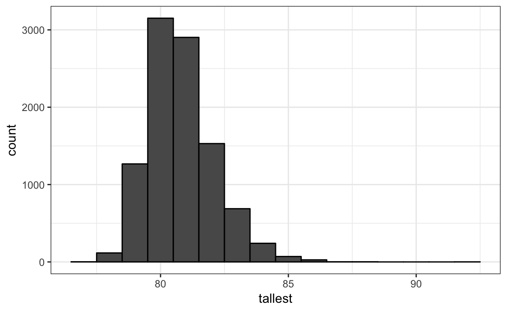

Chapter 27 Continuous probability
We earlier explained why when summarizing a list of numeric values, such as heights, it is not useful to construct a distribution that defines a proportion to each possible outcome. For example, if we measure every single person in a very large population of size \(n\) with extremely high precision, since no two people are exactly the same height, we need to assign the proportion \(1/n\) to each observed value and attain no useful summary at all. Similarly, when defining probability distributions, it is not useful to assign a very small probability to every single height.
Just as when using distributions to summarize numeric data, it is much more practical to define a function that operates on intervals rather than single values. The standard way of doing this is using the cumulative distribution functions (CDF).
We previously described empirical cumulative distribution function (eCDF) as a basic summary of a list of numeric values. As an example, we earlier defined the height distribution for adult male students. Here we define the vector \(x\) to contain the male heights:
library(tidyverse)
library(dslabs)
data(heights)
x <- heights %>% filter(sex=="Male") %>% .$heightWe defined the empirical distribution function as:
F <- function(a) mean(x<=a)which, for any value a, gives the proportion of values in the list x that are smaller or equal than a.
Keep in mind that we have not yet introduced probability. Let’s do this by asking the following: if I pick one of the male students at random, what is the chance that he is taller than 70.5 inches? Because every student has the same chance of being picked, the answer to this is equivalent to the proportion of students that are taller than 70.5 feet. Using the CDF we obtain an answer by typing:
1 - F(70)
#> [1] 0.377Once a CDF is defined, we can use this to compute the probability of any subset. For instance, the probability of a student being between height a and height b is:
F(b)-F(a)Because we can compute the probability for any possible event this way, the cumulative probability function defines the probability distribution for picking a height at random from our vector of heights x.
27.1 Theoretical distribution
In the data visualization chapter, we introduced the normal distribution as a useful approximation to many naturally occurring distributions, including that of height. The cumulative distribution for the normal distribution is defined by a mathematical formula which in R can be obtained with the function pnorm. We say that a random quantity is normally distributed with average avg and standard deviation s, if its probability distribution is defined by:
F(a) = rnorm(a, avg, s)This is useful because if we are willing to use the normal approximation for, say, height, we don’t need the entire data set to answer questions such as: what is the probability that a randomly selected student is taller then 70 inches? We just need the average height and standard deviation:
avg <- mean(x)
s <- sd(x)
1 - pnorm(70.5, avg, s)
#> [1] 0.37127.2 Approximations
The normal distribution is derived mathematically: we do no need data to define it. For practicing data scientists, almost everything we do involves data. Data is always, technically speaking, discrete. For example, we could consider our height data categorical with each specific height a unique category. The probability distribution is defined by the proportion of students reporting each height. Here is a plot of that probability distribution:

While most students rounded up their heights to the nearest inch, others reported values with more precision. One student reported his height to be 69.6850393700787 which is 177 centimeters. The probability assigned to this height is 0.001 or 1 in 812. The probability for 70 inches is much higher 0.106, but does it really make sense to think of the probability of being exactly 70 inches as being the same as 69.6850393700787? Clearly it is much more useful for data analytic purposes to treat this outcome as a continuous numeric variable, keeping in mind that very few people, or perhaps none, are exactly 70 inches, and that the reason we get more values at 70 is because people round to the nearest inch.
With continuous distributions the probability of a singular value is not even defined. For example, it does not make sense to ask what is the probability that a normally distributed value is 70. Instead, we define probabilities for intervals. So we could ask what is the probability that someone is between 69.5 and 70.5.
In cases like height, in which the data is rounded, the normal approximation is particularly useful if we deal with intervals that include exactly one round number. So, for example, the normal distribution is useful for approximating the proportion of students reporting between 69.5 and 70.5:
mean(x <= 68.5) - mean(x <= 67.5)
#> [1] 0.115
mean(x <= 69.5) - mean(x <= 68.5)
#> [1] 0.119
mean(x <= 70.5) - mean(x <= 69.5)
#> [1] 0.122Note how close we get with the normal approximation:
pnorm(68.5, avg, s) - pnorm(67.5, avg, s)
#> [1] 0.103
pnorm(69.5, avg, s) - pnorm(68.5, avg, s)
#> [1] 0.11
pnorm(70.5, avg, s) - pnorm(69.5, avg, s)
#> [1] 0.108However, the approximation is not as useful for other intervals. For instance, notice how the approximation breaks when we try to estimate:
mean(x <= 70.9) - mean(x<=70.1)
#> [1] 0.0222with
pnorm(70.9, avg, s) - pnorm(70.1, avg, s)
#> [1] 0.0836In general, we call this situation discretization. Although the true height distribution is continuous, the reported heights tend to be more common at discrete values, in this case, due to rounding. As long as we are aware of how to deal with this reality, the normal approximation can still be a very useful tool.
27.3 The probability density
For categorical distributions, we can define the probability of a category. For example, a roll of a die, let’s call it \(X\), can be 1,2,3,4,5 or 6. The probability of 4 is defined as:
\[ \mbox{Pr}(X=4) = 1/6 \]
The CFD can then easily be defined: \[ F(4) = \mbox{Pr}(X\leq 4) = \mbox{Pr}(X = 4) + \mbox{Pr}(X = 3) + \mbox{Pr}(X = 2) + \mbox{Pr}(X = 1) \]
Although for continuous distributions the probability of a single value \(\mbox{Pr}(X=x)\) is not defined, there is a theoretical definition that has a similar interpretation. The probability density at \(x\) is defined as the function \(f(a)\) such that:
\[ F(a) = \mbox{Pr}(X\leq a) = \int_{-\infty}^a f(x)\, dx \]
For those that know Calculus, remember that the integral is related to a sum: it is the sum of bars with widths approximating 0. If you don’t know Calculus, you can think of \(f(x)\) as a curve for which the area under that curve up to the value \(a\), gives you the probability of \(X\leq a\).
For example, to use the normal approximation to estimate the probability of someone being taller than 76 inches, we use:
1 - pnorm(76, avg, s)
#> [1] 0.0321which mathematically is the grey area below:

Figure 27.1: Integral of a function.
The curve you see is the probability density for the normal distribution. In R, we get this using the function dnorm.
Although it may not be immediately obvious why knowing about probability densities is useful, understanding this concept will be essential to those wanting to fit models to data for which predefined functions are not available.
27.4 Monte Carlo simulations
R provides functions to generate normally distributed outcomes. Specifically, the rnorm function takes three arguments: size, average (defaults to 0), and standard deviation (defaults to 1) and produced these random numbers. Here is an example of how we could generate data that looks like our reported heights:
n <- length(x)
avg <- mean(x)
s <- sd(x)
simulated_heights <- rnorm(n, avg, s)Not surprisingly, the distribution looks normal:

This is one of the most useful functions in R as it will permit us to generate data that mimics natural events and answers questions related to what could happen by chance by running Monte Carlo simulations.
If, for example, we pick 800 males at random, what is the distribution of the tallest person? How rare is a seven footer? The following Monte Carlo simulation helps us answer that question:
B <- 10000
tallest <- replicate(B, {
simulated_data <- rnorm(800, avg, s)
max(simulated_data)
})A seven footer is quite rare:
mean(tallest >= 7*12)
#> [1] 0.0193Here is the resulting distribution:

Note that it does not look normal.
27.5 Other continuous distributions
The normal distribution is not the only useful theoretical distribution. Other continuous distributions that we may encounter are the student-t, chi-squared, exponential, gamma, beta, and beta-binomial. R provides functions to compute the density, the quantiles, the cumulative distribution functions and to generate Monte Carlo simulations. R uses a convention that lets us remember the names, namely using the letters d, q, p and r in front of a shorthand for the distribution. We have already seen the functions dnorm, pnorm and rnorm for the normal distribution. The functions qnorm gives us the quantiles. We can therefore draw a distribution like this:
x <- seq(-4, 4, length.out = 100)
data.frame(x, f = dnorm(x)) %>%
ggplot(aes(x, f)) +
geom_line()
For the student-t the shorthand t is used so the functions are dt for the density, qt for the quantiles, pt for the cumulative distribution function, and rt for Monte Carlo simulation.
Exercise
Assume the distribution of female heights is approximated by a normal distribution with a mean of 64 inches and a standard deviation of 3 inches. If we pick a female at random, what is the probability that she is 5 feet or shorter?
Assume the distribution of female heights is approximated by a normal distribution with a mean of 64 inches and a standard deviation of 3 inches. If we pick a female at random, what is the probability that she is 6 feet or taller?
Assume the distribution of female heights is approximated by a normal distribution with a mean of 64 inches and a standard deviation of 3 inches. If we pick a female at random what is the probability that she is between 61 and 67 inches.
Repeat the exercise above, but convert everything to centimeters. That is, multiply every height, including the standard deviation, by 2.54. What is the answer now?
Notice that the answer to the question does not change when you change units. This makes sense since the answer to the question should not be affected by what units we use. In fact, if you look closely, you notice that 61 and 64 are both 1 SD away from the average. Compute the probability that a randomly picked, normally distributed random variable is within 1 SD from the average.
To see the math that explains why the answers to questions 4, 5, and 6 are the same, suppose we have a random variable with expected value \(\mu\) and standard error \(\sigma\). Suppose we ask the probability of \(X\) being smaller or equal to \(a\). Remember that, by definition, \(a\) is \((a - \mu)/\sigma\) standard deviations \(\sigma\) away from the average \(\mu\). The probability is:
\[ \mbox{Pr}(X \leq a) \]
Now we subtract \(\mu\) to both sides and then divide both sides by \(\sigma\):
\[ \mbox{Pr}\left(\frac{X-\mu}{\sigma} \leq \frac{a-\mu}{\sigma} \right) \]
The quantity on the right is a standard normal random variable. It has an average of 0 and a standard error of 1. We will call it \(Z\):
\[ \mbox{Pr}\left(Z \leq \frac{a-\mu}{\sigma} \right) \]
So, no matter the units, the probability of \(X\leq a\) is the same as the probability of a standard normal variable being less than \((a - \mu)/\sigma\). If
muis the average andsigmathe standard error, which of the following R code would give us the right answer in every situation:A.
mean(X<=a)B.pnorm((a - mu)/sigma)C.pnorm((a - mu)/sigma, mu, sigma)D.pnorm(a)Imagine the distribution of male adults is approximately normal with an expected value of 69 and a standard deviation of 3. How tall is the male in the 99th percentile? Hint: use
qnorm.The distribution of IQ scores is approximately normally distributed. The expected value is 100 and the standard deviation is 15. Suppose you want to know the distribution of the smartest person in your school district if 10,000 people are born each in your school district. Run a Monte Carlo simulation with
B=1000generating one million IQ scores and keeping the highest. Make a histogram.